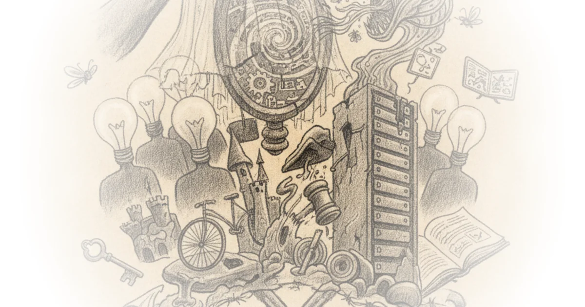
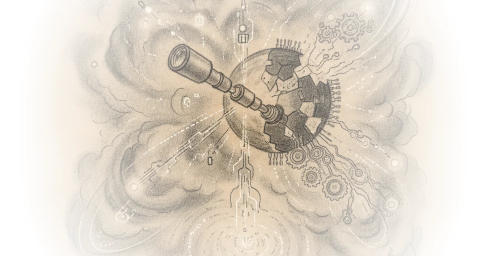
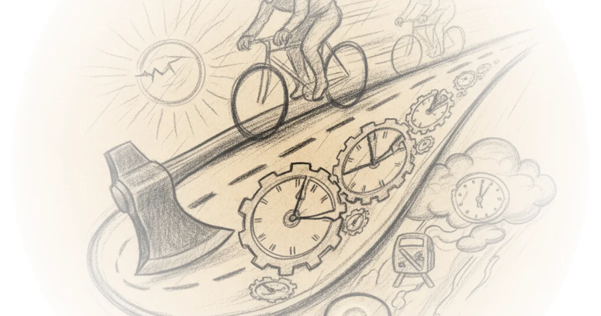
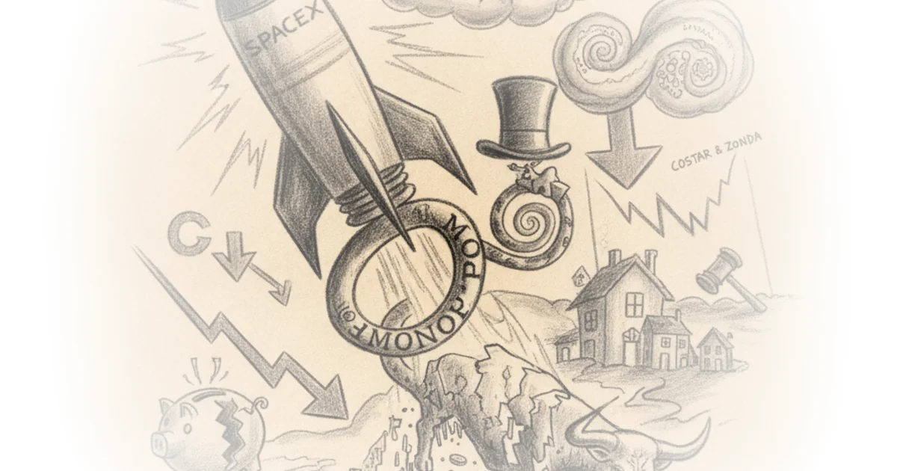

Monopoly Round-Up: Graham platner and stock market Democrats Matt Stoller · BIG by Matt Stoller ·Jun 7, 2026 · 11 min read · AI & Tech
Inside the Anti-Tech rebellion in schools Yascha Mounk · Persuasion ·Jun 7, 2026 · 12 min read · AI & Tech
Criticizing the everything machine Cory Doctorow · Pluralistic ·Jun 6, 2026 · 12 min read · AI & Tech
Cloud, cyber, and AI capabilities Various · Defense Tech and Acquisition ·Jun 6, 2026 · 72 min read · AI & Tech
Don't dethrone consciousness! Erik Hoel · The Intrinsic Perspective ·Jun 5, 2026 · 25 min read · AI & Tech
(Very partial) crosspost: Alex heath: SubStack is opening up to AI: Interviewing CEO chris best Brad DeLong · DeLong's Grasping Reality ·Jun 4, 2026 · 16 min read · AI & Tech
Delusion as a service Cory Doctorow · Pluralistic ·Jun 4, 2026 · 16 min read · AI & Tech 
To boldly go: The case for space datacenters Dylan Patel · SemiAnalysis ·Jun 3, 2026 · 46 min read · AI & Tech
The Nvidia AI pc, project solara, Microsoft AI Ben Thompson · Stratechery ·Jun 3, 2026 · 13 min read · AI & Tech
Floating point: The origin story Babbage · The Chip Letter ·Jun 2, 2026 · 13 min read · AI & Tech 
Crosspost: Noah smith: How much more software do we really need? Brad DeLong · DeLong's Grasping Reality ·Jun 2, 2026 · 12 min read · AI & Tech
The tedious power of storytelling (02 jun 2026) must-we-pretend Cory Doctorow · Pluralistic ·Jun 2, 2026 · 17 min read · AI & Tech
Lime axes speed limits for deliveroo riders Michael Macleod · London Centric ·Jun 2, 2026 · 12 min read · AI & Tech 
Inference is unlikely to ever be a low marginal cost operational node, & the other reasons why the… Brad DeLong · DeLong's Grasping Reality ·Jun 1, 2026 · 11 min read · AI & Tech
Stochastic parrots on the palatine hill: Monday MAMLMs Brad DeLong · DeLong's Grasping Reality ·Jun 1, 2026 · 11 min read · AI & Tech
Import AI 459: AI oversight is difficult; scaling laws for protein folding models; and pricing the… Jack Clark · Import AI ·Jun 1, 2026 · 17 min read · AI & Tech
LLMs were mostly (but not entirely) useless at Extra-Textual tasks involved in the composition of… Freddie deBoer · ·Jun 1, 2026 · 21 min read · AI & Tech
Monopoly Round-Up: After SpaceX goes public, does the stock market finally fall? Matt Stoller · BIG by Matt Stoller ·May 31, 2026 · 15 min read · AI & Tech 
Data centers: Counting gigawatts before they hatch Various · Energy Bad Boys ·May 30, 2026 · 10 min read · AI & Tech
The mystery gasoline surcharge: How oil incumbents are trying to maintain fossil fuel dominance Matt Stoller · BIG by Matt Stoller ·May 29, 2026 · 12 min read · AI & Tech
AI dark output: The visible cost of invisible output Dylan Patel · SemiAnalysis ·May 29, 2026 · 22 min read · AI & Tech
"Agentic AI" is a bonfire of the tokens while fab capacity, power grids, and P&Ls are the brakes:… Brad DeLong · DeLong's Grasping Reality ·May 29, 2026 · 15 min read · AI & Tech